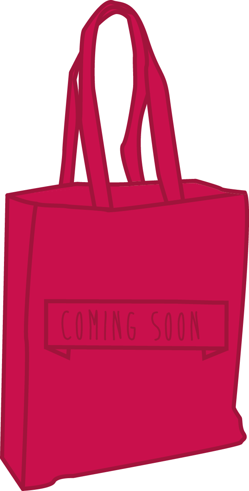

"Wij geloven sterk in de kracht van de geest als element in het genezingsproces. Het gaat om het geloof in genezing, het vechten tegen de ziekte, het optimisme. Hoop is essentieel. En hoop kan je vinden bij anderen", aldus Me To You.
De komende weken gaan wij, studenten Grafische en Digitale media, op zoek naar verhalen. Verhalen van hoop, sterkte, verdriet, overwinning en vechten. Uit deze verhalen halen wij pakkende quotes die we vervolgens op katoenen tassen laten drukken. Deze 'quote bags' bieden we dan aan ten voordele van Me To You zodat we onze verhalen kunnen delen. Dat doen we naar aanleiding van de Warmste Week, de solidariteitsactie van Studio Brussel.
Binnenkort gaan wij van start met de verkoop van de quote bags. Alle informatie vind je hier of volg onze facebook of instagram om op de hoogte te blijven!
Wij zijn vier laatstejaarsstudenten Grafische en Digitale media aan de AP Hogeschool. In het kader van onze opleiding nemen we deel aan de Warmste Week van Studio Brussel. In de zoektocht naar een goed doel om te steunen waren we meteen gecharmeerd door de sterke boodschap van Me To You. Daarom wilden we graag voor deze stichting een actie opzetten.
De stichting Me To You is sinds 2014 actief en steunt specifieke onderzoeksprojecten. Ze willen de verdere opmars van leukemie en aanverwante vormen van beenmerg- en bloedziekten tegengaan. Me To You werd opgericht ter nagedachtenis van Els Maes, een sterke vrouw die na drie lange jaren de strijd tegen leukemie verloor.
Meer informatie kan je vinden op www.stichtingmetoyou.be.
De afgelopen weken zijn wij op zoek gegaan naar inspirerende verhalen van personen die vechten tegen leukemie. Die personen hebben we geïnterviewd en uit dat interview hebben we quote gehaald die we inspirerend vonden. De quotes hebben we op katoenen tassen (tote bags) gedrukt en zullen we binnenkort op een aantal verkooppunten verkopen. Op deze manier willen we deze pakkende verhalen delen want samen zijn we sterker.
De quote bags zullen €5 per stuk kosten.
Eind november kondigen we aan op welke plaatsen onze actie zal doorgaan.
